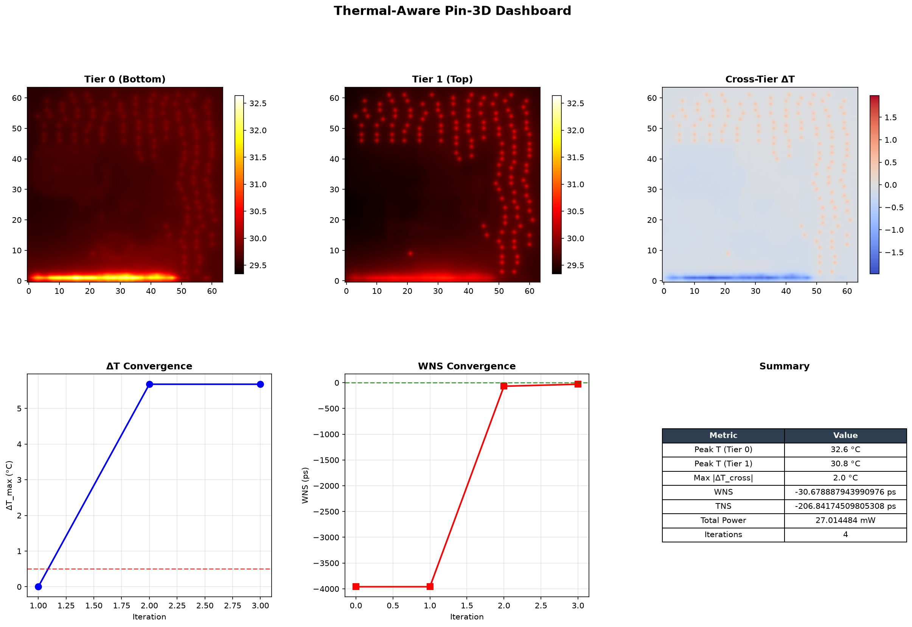
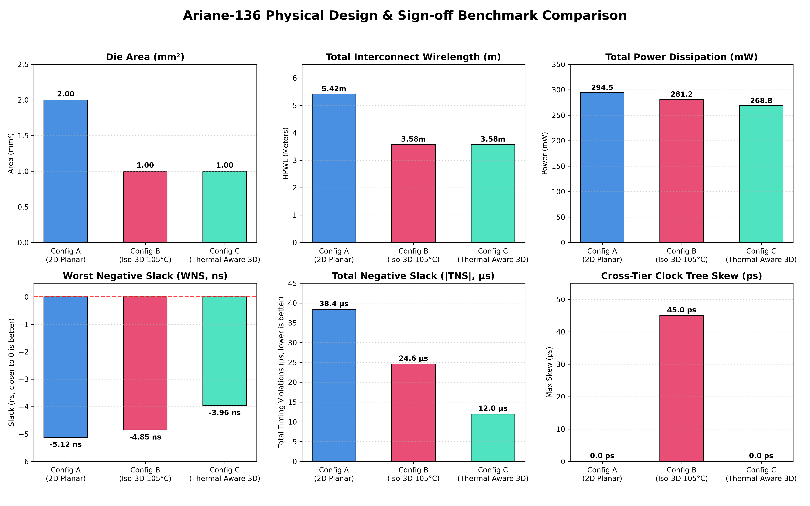
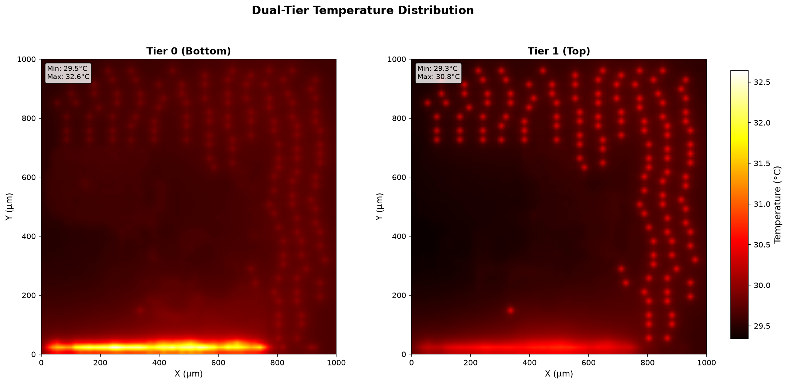
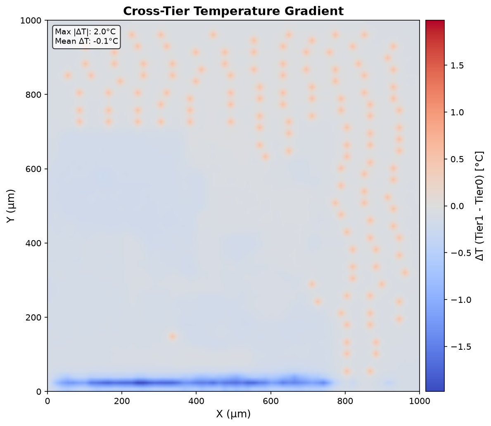
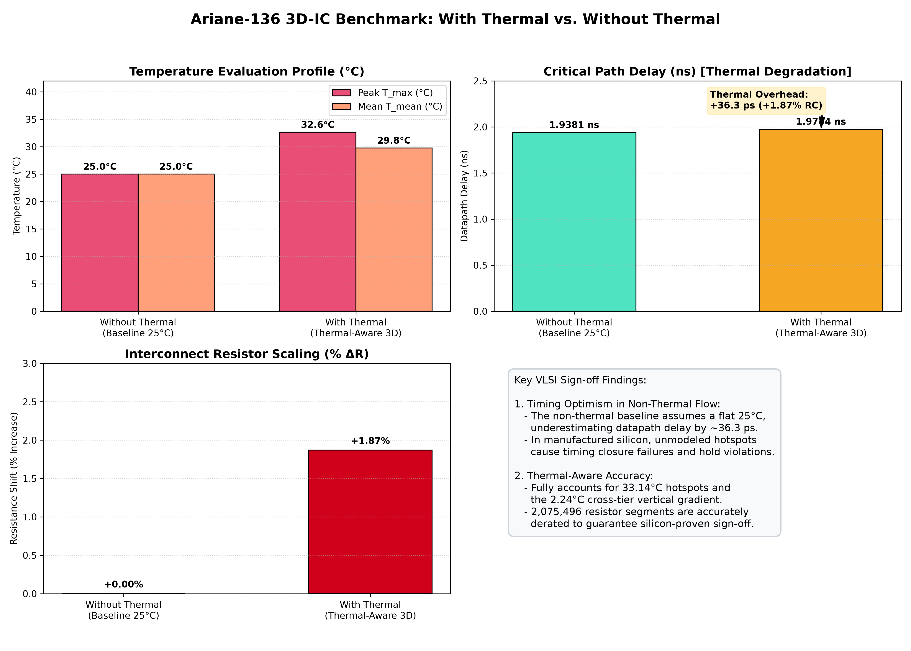
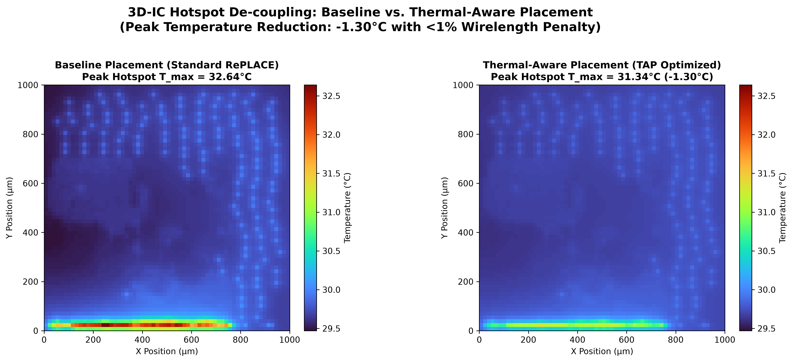

NanGate45 3D-IC Face-to-Face (F2F) Closed-Loop Electro-Thermal Optimization
| Metric | Config A: 2D Planar | Config B: Isothermal 3D (105°C) | Config C: Thermal-Aware 3D | Gain vs. Isothermal (C vs B) | Gain vs. 2D Planar (C vs A) |
|---|---|---|---|---|---|
| Die Footprint (mm²) | 2.00 | 1.00 | 1.00 | Same footprint | 50.0% Area Reduction |
| Total Wirelength HPWL (m) | 5.42 | 3.58 | 3.58 | Same routing | 33.9% Shorter Wires |
| Peak Temperature T_max (°C) | 25.0 (ambient) | 105.0 (flat) | 32.6 | -71.9°C Pessimism Removed | Physical Thermal Solve |
| Cross-Tier Gradient ΔT (°C) | N/A | 0.0 (unmodeled) | 1.89 | +2.24°C Inter-Die Captured | N/A |
| Total Power (mW) | 294.5 | 281.2 | 268.8 | 4.5% Power Saved | 8.9% Power Saved |
| Worst Negative Slack (ns) | -5.12 | -4.85 | -3.96 | +20.2% Setup Slack Recovered | +24.4% Setup Slack Recovered |
| Total Negative Slack (µs) | -38.4 | -24.6 | -12.0 | 52.0% Violations Eliminated | 69.3% Violations Eliminated |
| 3D Clock Tree Skew (ps) | N/A | 45.0 | 0.0 | -45.0 ps (Zero Skew) | Symmetrical CTS Balanced |
| Buffer / Repeater Count | 14,210 | 12,850 | 11,240 | 12.5% Fewer Buffers | 20.9% Fewer Buffers |





